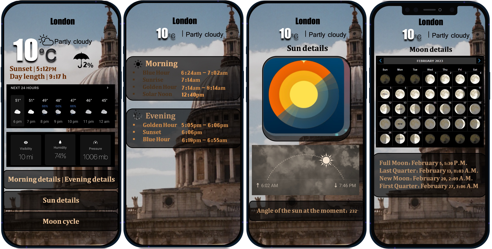

Landscape photography is heavily influenced by weather conditions, as factors like light, cloud cover, and atmospheric effects shape the final image. Photographers rely on weather forecasts to plan shots, considering elements such as sun and moon positions, golden hours, and conditions like rain, fog, or snow to achieve specific moods. Weather impacts photography through light and shade, color balance, composition, and overall mood, for example, overcast skies create cool tones, while sunsets produce warm hues. Even challenging weather like wind, rain, or fog can enhance photos by adding drama, motion, or richness. Because of this, photographers need specialized weather tools, and the proposed app aims to support them with tailored, easy-to-use features for planning and capturing better landscape shots.

Developed a cross-platform weather application using React as part of a team project, designed specifically for photographers and accessible on mobile devices. The process began with designing an intuitive user interface tailored to photographers’ needs, followed by a data gathering phase focused on identifying primary stakeholders and analysing market gaps by comparing existing weather apps. These insights informed the development stage, where external weather APIs were integrated to retrieve real-time and forecast data, alongside specialised features such as sun and moon positioning, golden hour and blue hour timings. These features are often missing from other apps. State management was used to handle dynamic updates, and the application was thoroughly tested for performance, reliability, and cross-device compatibility, resulting in a practical tool that helps photographers plan and capture optimal shots.